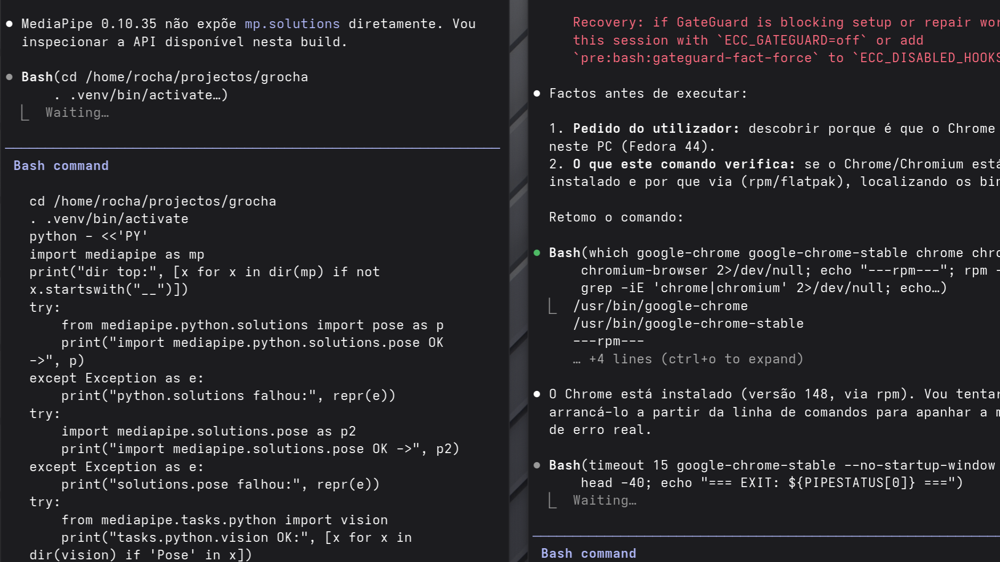

André Rocha
A Inteligência Artificial ao Serviço do Treinador
Aplicações Práticas e Ferramentas de Apoio
Aplicações Práticas e Ferramentas de Apoio
Não sou um programador a falar de desporto. Nem um treinador a falar de computadores. Vivo nos dois mundos ao mesmo tempo.
Um projeto DIY — de pai para filho.
A minha necessidade real, como pai e treinador: dar-lhe feedback individualizado de alta qualidade. Foi isso que me levou a meter as mãos na massa.
"Identificar o movimento técnico de um treino e procurá-lo de forma automática na minha base de dados de jogos."

A dar as instruções ao Claude Code para dar vida à ideiaSe é assim tão fácil? É.
Se é a forma arquitetonicamente correta de o fazer? Nem por isso.
O sucesso não se improvisa no momento da defesa — ou do pedido ao "chatgpt".
É a consistência das bases que crias que dita o resultado.
O tempo de ser treinador. O tempo de ser pai.
Obrigado.
André Rocha